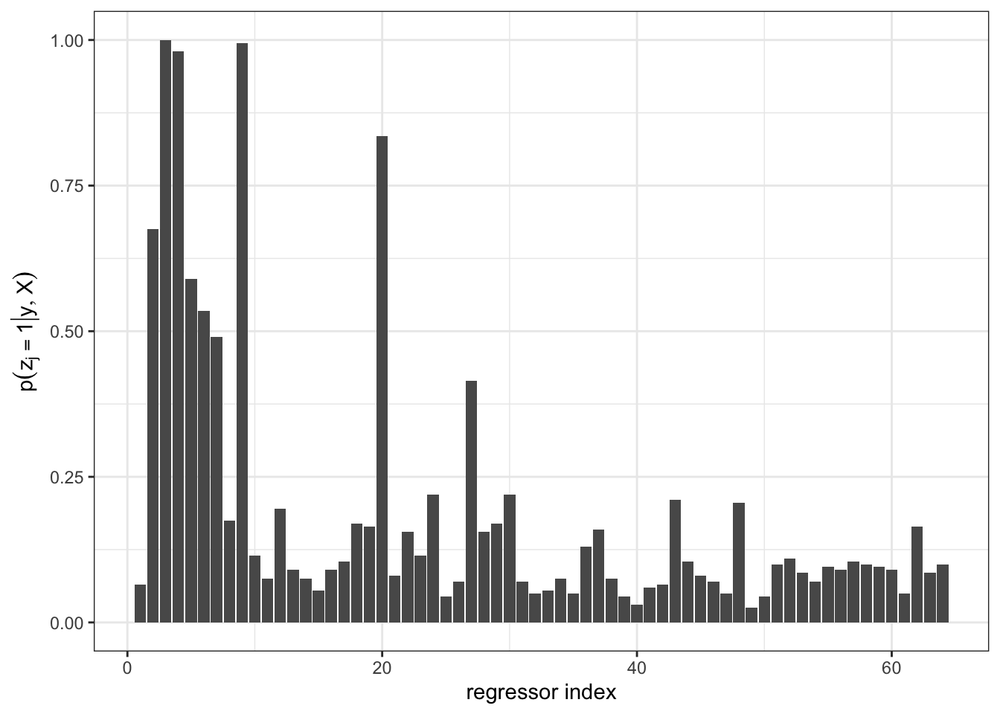
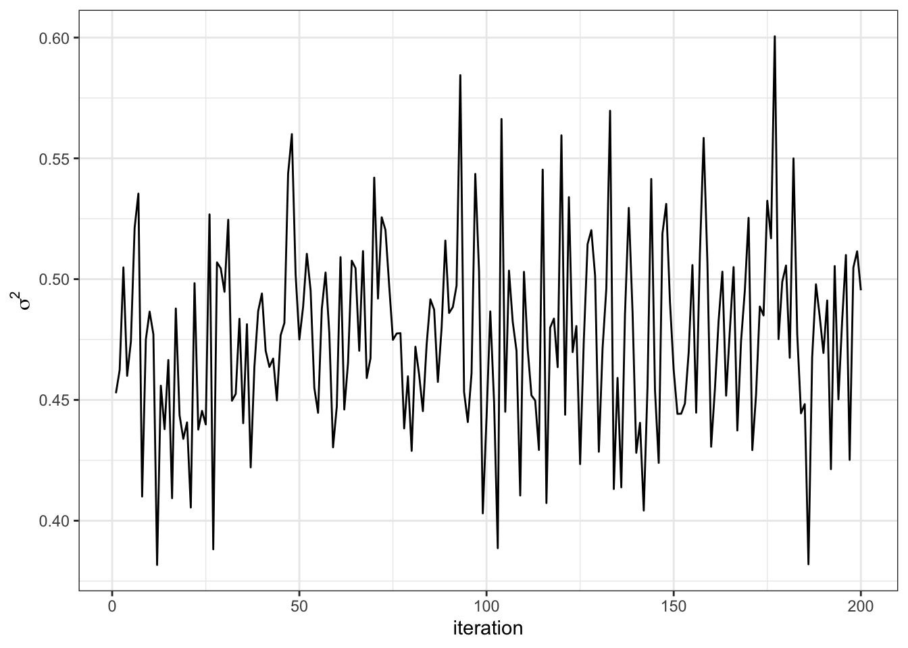
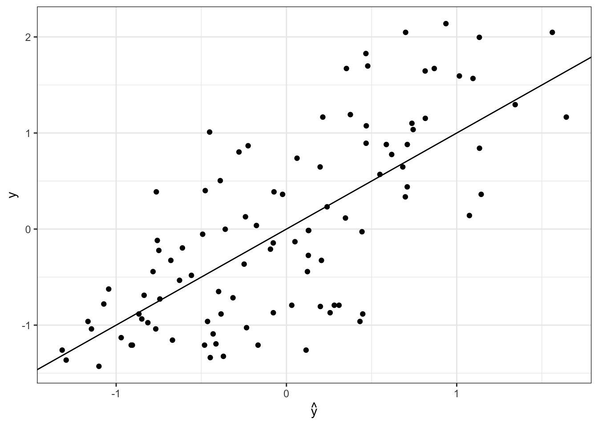

load libraries
library(tidyverse)
library(mvtnorm)
library(latex2exp)
library(coda)Dr. Alexander Fisher
Consider the standard regression problem,
\[ Y | \beta, \sigma^2 \sim N_n(X\beta, \sigma^2 I_n) \]
where each term is of typical dimension,
Often, when we have many covariates, i.e. \(p\) is large, we believe that some do not really explain \(Y\). A particular subset of the explanatory variables is termed a model of \(Y\). Since each explanatory variable belongs in the model, or does not, there are \(K = 2^p\) total models we can consider.
For notational convenience, let \(M_1, \ldots, M_{K}\) be the models under study.
For even modestly large \(p\), such as \(p=64\) in the example below, there are more possible models \(2^{64} \approx 1.8 \times 10^{19}\) than there are grains of sand on earth (about \(7.5 \times 10^{18}\)).
For this reason, we will never be able to sample a substantial proportion of all the models.
There are many different questions one might answer with a regression model. Sometimes, the model itself is of interest i.e. we wish to select a single model \(M_j\). Other times, we may care about estimating a particular coefficient \(\beta_i\) to understand how a single predictor relates to \(Y\). Alternatively, we may really care about making predictions for new data.
These tasks are not mutually exclusive, but might direct our approach differently.
In particular, if we are interested in prediction, or estimating a particular coefficient, then it’s important to realize that estimates such as \(\hat{\beta}\) or a function thereof, \(\hat{Y} = X \hat{\beta}\) are implicitly conditioned on a specific model.
Let \(z \in \mathbb{R}^p\) be a vector of indicator variables \(z_1, \ldots, z_p\), where \(z_j = 1\) means the \(j\)th predictor is in the model, and \(z_j = 0\) means it is not. Conceptually, \(z\) tells us which regression coefficients are non-zero.
\[ y_i = z_1 \beta_1 x_{i, 1} + \ldots + z_p \beta_p x_{i,p} + \epsilon \]
where \(\epsilon \sim N(0, \sigma^2)\).
In matrix form,
\[ Y|\beta, z, \sigma^2 \sim N_n(XZ\beta, \sigma^2 I_n) \]
where \(Z = z I_p\) is a diagonal matrix.
Each separate “model” \(M\) is equivalent to a different vector \(z\).
Once we’ve setup our likelihood to explicitly condition on the model, \(z\), we continue our usual Bayesian practice: we make inferences about all unknowns: \(\beta, \sigma^2\), and \(z\).
Now, however we can differentiate between estimates of \(\beta\) conditional on a model,
\[ E[\beta | y, z] = \int \beta p(\beta | y, z) d\beta \]
versus estimates of \(\beta\) that account for model uncertainty:
\[ \begin{aligned} E[\beta | y] = \sum_{z} \int \beta p(\beta, z | y) d\beta \end{aligned} \]
Data generative model:
\[ Y|\beta, z, \sigma^2 \sim N_n(X_z\beta_z, \sigma^2 I_n) \]
Common prior specification:
\[ \begin{aligned} \beta_z | \sigma^2 &\sim N_z \left(0, g \sigma^2 (X_z^TX_z)^{-1}\right)\\ 1/\sigma^2 &\sim \text{gamma}(\frac{\nu_0}{2}, \frac{\nu_0}{2} \sigma_0^2)\\ p(z_i = 1) &= \frac{1}{2} \text{ for all i} \end{aligned} \]
where \(g\) is some fixed constant and \(\beta_z\) is the set of \(\beta\) corresponding to non-zero entries of \(z\) (\(X_z\) is constructed similarly). The prior on \(\beta\) is known as Zellner’s \(g\) prior 1. The \(g\) prior is mathematically convenient and leads to nice marginal distributions for our Gibbs sampler.
Where does the prior variance of \(\beta\) come from? Recall: \(Var[\hat{\beta}_{OLS}] = \sigma^2 (X^TX)^{-1}\). So a priori we expect the variance of \(\beta\) to look like the OLS variance and \(g\) controls the weight of this prior variance (or \(1/g\) controls the weight of the precision). Small \(g\) implies more prior precision relative to the data.
\[ \beta_z | X_z, \sigma^2, y \sim N_z\left( A^{-1}b, A^{-1} \right) \]
where \(A^{-1} = \sigma^2 \left( \frac{g}{g+1}\right)(X_z^TX_z)^{-1}\) and \(b = \frac{1}{\sigma^2} X_z^Ty\).
We can simplify the full conditional notation,
\[ \beta_z | X_z, \sigma^2, y \sim N_z\left( \left(\frac{g}{g+1}\right)\hat{\beta}_{z(OLS)},~ \left(\frac{g}{g+1}\right) \sigma^2 \left[X_z^TX_z\right]^{-1} \right) \]
We can integrate out \(\beta\) analytically, for a more efficient sampler,
\[ 1/\sigma^2 | X_z, y \sim \text{gamma}([\nu_0 + n]/2, [\nu_0 \sigma_0^2 + SSR_g^z]/2) \]
where \(SSR_g^z = y^T(I - \frac{g}{g+1} X_z (X_z^T X_z)^{-1} X_z^T)y\)
\[ z_j \sim \text{binary}(o_j/(1 + o_j)) \]
where \(p_j\) is the probability that \(z_j = 1\), and is given by
\[ o_j = \frac {Pr(z_j = 1 | y, X, z_{-j})} {Pr(z_j = 0 | y, X, z_{-j})} = \frac{p(y|X, z_{-j}, z_j = 1) p(z_j = 1)} {p(y|X, z_{-j}, z_j = 0) p(z_j = 0)} \]
See page 165 of the book for details on how to compute the marginal likelihood \(p(y|X, z)\).
This example comes from Hoff Ch 9.
The data below contains our outcome variable, diabetes progression (first column) and 64 predictors. This example and data set appeared on a previous homework.
# log-probability of y given x
lpyx = function(y, X, g=length(y),
nu0=1, s20 = try(summary(lm(y~1+X))$sigma^2, silent = TRUE)) {
n=nrow(X)
p=ncol(X)
if(p==0) {
Hg = 0
s20 =mean(y^2)
}
if(p>0) {
Hg = (g / (g + 1)) * X %*% solve(t(X) %*% X) %*% t(X)
}
SSRg = t(y) %*% (diag(1, nrow = n) - Hg) %*%y
-.5 *(n *log(pi) + p * log(1 + g) + (nu0 + n) * log(nu0 *s20 + SSRg)- nu0 *log(nu0 *s20)) +
lgamma((nu0 + n) / 2) - lgamma(nu0 / 2
)
}
SSR = function(y, X, g = length(y)) {
n=nrow(X)
p=ncol(X)
Hg = (g/(g+1)) * X %*% solve(t(X) %*% X) %*% t(X)
return(t(y) %*% (diag(1,nrow=n) - Hg) %*% y)
}
getVarianceBeta = function(X, s2, g = length(y)) {
(g / (g+1)) * s2 * solve(t(X) %*% X)
}
getOLS_mean = function(y, X, varBeta, g = length(y)) {
varBeta %*% t(X) %*% y
}# setup
S = 200 # num iterations
# fixed quantities
nu0 = 1
sigma02 = 1
alpha_n = (nu0 + n)/2
beta_const = nu0 * sigma02
g = length(y)
# objects to fill
Z = matrix(NA, S, p)
BETA = matrix(NA, S, p)
SIGMA2 = matrix(NA, S, 1)
## starting values ##
z = rep(1, ncol(X))
lpy.c = lpyx(y , X[,z==1, drop=FALSE])
gamma = 1
## Gibbs sampler
for(s in 1:S) {
# update z
for (j in sample(1:ncol(X))) {
zp = z
zp[j] = 1 - zp[j]
lpy.p = lpyx(y, X[,zp==1, drop = FALSE])
r = (lpy.p - lpy.c) * (-1)^(zp[j]==0)
z[j] = rbinom(1, 1, 1 / (1+exp(-r)))
if(z[j] == zp[j]) {
lpy.c = lpy.p
}
}
Z[s,] = z
## update sigma^2
s2 = 1 / rgamma(1, alpha_n, (beta_const +
SSR(y, X[,z==1, drop = FALSE]))/2)
SIGMA2[s] = s2
## update beta
varBeta = getVarianceBeta(X[,z==1, drop = FALSE], s2)
meanBeta = getOLS_mean(y, X[,z==1, drop = FALSE], varBeta / s2)
beta = rmvnorm(1, mean = meanBeta,
sigma = varBeta)
BETA[s,z==1] = beta
}

V1 V2 V3 V4 V5 V6 V7 V8
200.00000 122.61862 0.00000 103.73609 46.31771 27.11704 36.39864 103.84635
V9 V10 V11 V12 V13 V14 V15 V16
200.00000 200.00000 200.00000 131.97829 200.00000 200.00000 200.00000 105.30279
V17 V18 V19 V20 V21 V22 V23 V24
200.00000 109.46251 200.00000 125.03977 200.00000 133.38260 141.21845 200.00000
V25 V26 V27 V28 V29 V30 V31 V32
200.00000 200.00000 87.26784 156.01952 200.00000 200.00000 200.00000 200.00000
V33 V34 V35 V36 V37 V38 V39 V40
200.00000 200.00000 200.00000 157.92121 200.00000 200.00000 200.00000 159.02378
V41 V42 V43 V44 V45 V46 V47 V48
200.00000 154.07992 86.32241 200.00000 200.00000 200.00000 200.00000 124.12176
V49 V50 V51 V52 V53 V54 V55 V56
200.00000 200.00000 200.00000 200.00000 98.08846 200.00000 200.00000 112.44715
V57 V58 V59 V60 V61 V62 V63 V64
147.64897 200.00000 200.00000 200.00000 200.00000 117.52886 200.00000 200.00000 V1
200 yX.diabetes.test<-dget(
url("https://sta360-fa24.github.io/data/yX.diabetes.test"))
Xtest = yX.diabetes.test[,-1]
ytest = yX.diabetes.test[,1]
betaHat = as.vector(colSums(BETA, na.rm = TRUE) / S)
yHat = Xtest %*% betaHat
data.frame(yHat, ytest) %>%
ggplot(aes(x = yHat, y = ytest)) +
geom_point() +
geom_abline(intercept = 0, slope = 1) +
theme_bw() +
labs(x = TeX(r'($\hat{y}$)'), y = "y")
The predictive sum of squared error is
Compare this to the predictive sum of squared error from ridge regression on the homework.
Zellner, Arnold. “On assessing prior distributions and Bayesian regression analysis with g-prior distributions.” Bayesian inference and decision techniques (1986).↩︎